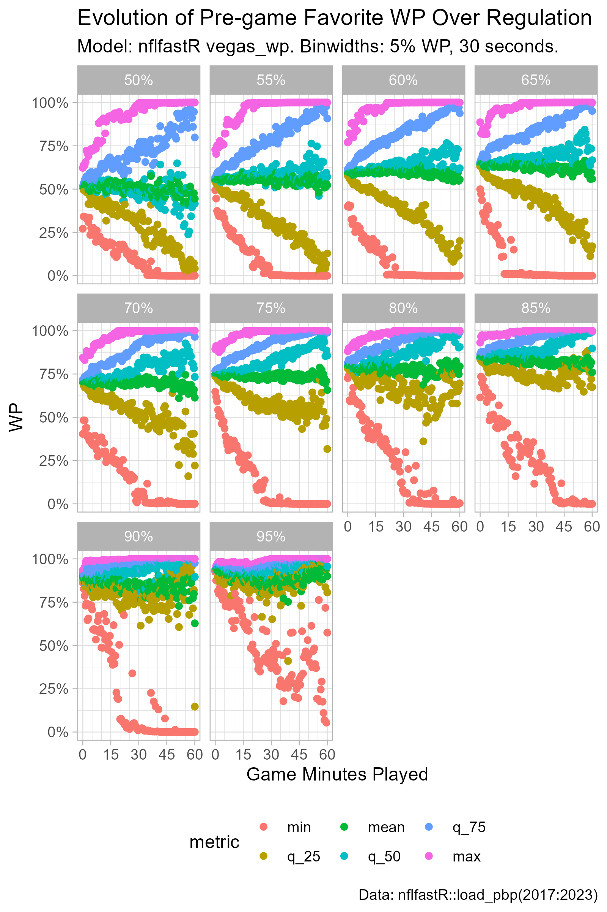
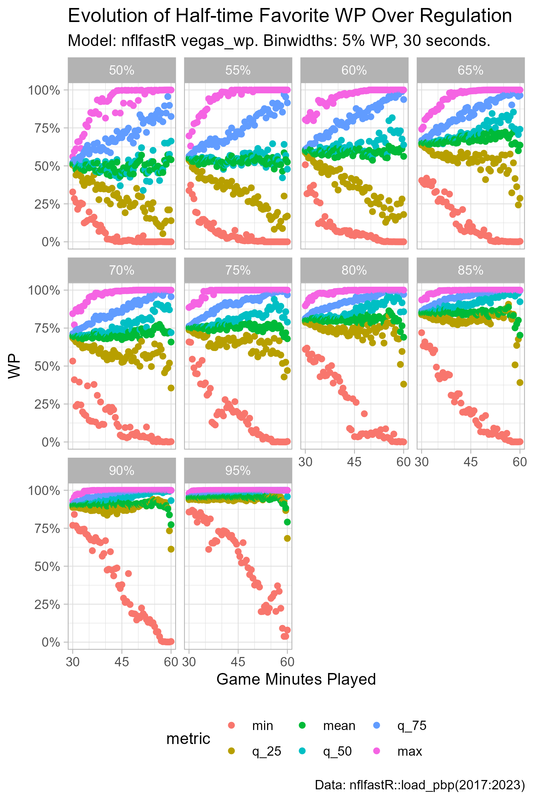
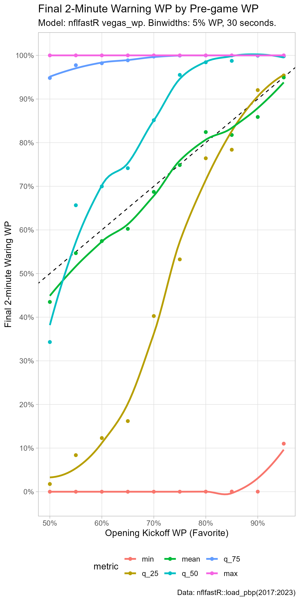

Some Top-down Analysis of nflfastR vegas_wp Model.
raw_df <-
load_pbp(2017:2023)
# Pull a vector of game_id's where
# the home team is a favorite.
# This will be used to develop a columns
# that track the pre-game favorite's
# current WP and WPA.
home_favorite <-
raw_df %>%
group_by(game_id) %>%
slice_head(n = 1) %>%
filter(vegas_home_wp >= 0.5) %>%
pull(game_id)
# Build a dataframe for regulation time
# win probabilities for the pre-game favorite,
# binned by time remaining.
df <-
raw_df %>%
filter(qtr %in% c(1, 2, 3, 4)) %>%
filter(!(is.na(play_type))) %>%
select(game_id, desc,
vegas_home_wp, vegas_home_wpa,
game_seconds_remaining) %>%
mutate(init_favorite_wp = ifelse(
game_id %in% home_favorite,
vegas_home_wp,
1 - vegas_home_wp
)) %>%
mutate(init_favorite_wpa = ifelse(
game_id %in% home_favorite,
vegas_home_wpa,
-1 * vegas_home_wpa
)) %>%
mutate(game_seconds_played = 3600 - game_seconds_remaining) %>%
mutate(
game_minutes_played_binned =
round(game_seconds_played / 30) / 2
)# Build a dataframe with game_id's and the
# initial favorite wp (binned).
init_favorite_wp_binned <-
df %>%
group_by(game_id) %>%
slice_head(n = 1) %>%
mutate(
init_favorite_wp_binned =
round(init_favorite_wp / 0.05) * .05
) %>%
select(game_id, init_favorite_wp_binned)
# Looks like there were some data errors for the following 11 games:
# "2017_09_CIN_JAX" "2017_14_SEA_JAX" "2018_01_LA_OAK" "2018_03_TEN_JAX"
# "2018_07_HOU_JAX" "2018_11_PIT_JAX" "2018_13_KC_OAK" "2018_15_WAS_JAX"
# "2018_16_DEN_OAK" "2019_09_DET_OAK" "2019_14_TEN_OAK"
bad_games <-
init_favorite_wp_binned %>%
filter(
init_favorite_wp_binned < 0.5
) %>%
pull(
game_id
)
df_pregame_wp_evolution <-
df %>%
filter(
(game_id %in% bad_games) == F
) %>%
filter(
is.na(game_seconds_remaining) == F
) %>%
left_join(
init_favorite_wp_binned %>%
filter(
(game_id %in% bad_games) == F
),
by = c("game_id" = "game_id")
) %>%
group_by(
game_minutes_played_binned,
init_favorite_wp_binned
) %>%
summarize(
n = n(),
min = min(init_favorite_wp),
q_25 = quantile(init_favorite_wp, 0.25),
q_50 = quantile(init_favorite_wp, 0.5),
mean = mean(init_favorite_wp),
q_75 = quantile(init_favorite_wp, 0.75),
max = max(init_favorite_wp),
.groups = "drop"
) %>%
pivot_longer(
min:max,
names_to = "metric",
values_to = "value"
) %>%
# Convert metric variable to a factor,
# with levels ordered smallest to largest.
mutate(
metric = factor(
metric,
levels = c(
"min", "q_25", "mean", "q_50", "q_75", "max"
)
)
) %>%
# Next 2 mutates used to make a character
# label for facet labels.
mutate(
init_favorite_wp_binned_label =
round((init_favorite_wp_binned * 100), 1)
) %>%
mutate(
init_favorite_wp_binned_label =
paste0(
as.character(init_favorite_wp_binned_label),
"%"
)
)
p_pregame_wp_evolution <-
df_pregame_wp_evolution %>%
ggplot(
aes(
x = game_minutes_played_binned,
y = value,
color = metric
)
) +
geom_point() +
facet_wrap(~ init_favorite_wp_binned_label) +
theme_light() +
scale_x_continuous(
breaks = seq(0, 60, by = 15),
minor_breaks = seq(0, 60, by = 5)
) +
scale_y_continuous(
labels = scales::percent
) +
theme(legend.position = "bottom") +
labs(x = "Game Minutes Played",
y = "WP",
title = "Evolution of Pre-game Favorite WP Over Regulation",
subtitle = "Model: nflfastR vegas_wp. Binwidths: 5% WP, 30 seconds.",
caption = "Data: nflfastR::load_pbp(2017:2023)")
ggsave(
filename = "pregame_favorite_wp_evolution.png",
plot = p_pregame_wp_evolution,
height = 7.5,
width = 5,
units = "in",
dpi = "retina"
)
# Build a dataframe with game_id's, half_favorite side (home or away),
# and the favorite to start the 2nd half (binned).
half_favorite <-
df %>%
filter(game_seconds_remaining <= 1800) %>%
group_by(game_id) %>%
slice_head(n = 1) %>%
mutate(
half_favorite =
ifelse(vegas_home_wp > 0.5,
"home",
"away")
) %>%
mutate(
half_favorite_wp =
ifelse(half_favorite == "home",
vegas_home_wp,
1 - vegas_home_wp)
) %>%
mutate(
half_favorite_wp_binned =
round(half_favorite_wp / 0.05) * .05
) %>%
select(game_id, half_favorite, half_favorite_wp_binned)
df_half_wp_evolution <-
df %>%
filter(game_seconds_remaining <= 1800) %>%
left_join(
half_favorite,
by = c("game_id" = "game_id")
) %>%
mutate(
half_favorite_wp =
ifelse(half_favorite == "home",
vegas_home_wp,
1 - vegas_home_wp)
) %>%
group_by(
game_minutes_played_binned,
half_favorite_wp_binned
) %>%
summarize(n = n(),
min = min(half_favorite_wp),
q_25 = quantile(half_favorite_wp, 0.25),
q_50 = quantile(half_favorite_wp, 0.5),
q_75 = quantile(half_favorite_wp, 0.75),
max = max(half_favorite_wp),
mean = mean(half_favorite_wp),
.groups = "drop") %>%
pivot_longer(min:mean,
names_to = "metric",
values_to = "value") %>%
mutate(
metric = factor(
metric,
levels = c(
"min",
"q_25",
"mean",
"q_50",
"q_75",
"max"
)
)
) %>%
mutate(
half_favorite_wp_binned_label =
round((half_favorite_wp_binned * 100), 1)
) %>%
mutate(
half_favorite_wp_binned_label =
paste0(
as.character(half_favorite_wp_binned_label),
"%"
)
)
p_half_wp_evolution <-
df_half_wp_evolution %>%
filter(
half_favorite_wp_binned != 1
) %>%
ggplot(aes(x = game_minutes_played_binned,
y = value,
color = metric)) +
geom_point() +
facet_wrap(~ half_favorite_wp_binned_label) +
theme_light() +
scale_x_continuous(
breaks = seq(0, 60, by = 15),
minor_breaks = seq(0, 60, by = 5)
) +
scale_y_continuous(
labels = scales::percent
) +
theme(legend.position = "bottom") +
labs(x = "Game Minutes Played",
y = "WP",
title = "Evolution of Half-time Favorite WP Over Regulation",
subtitle = "Model: nflfastR vegas_wp. Binwidths: 5% WP, 30 seconds.",
caption = "Data: nflfastR::load_pbp(2017:2023)")
ggsave(
filename = "halftime_favorite_wp_evolution.png",
plot = p_half_wp_evolution,
height = 7.5,
width = 5,
units = "in",
dpi = "retina"
)
p_2_min_warning <-
df_pregame_wp_evolution %>%
filter(
game_minutes_played_binned == 58
) %>%
ggplot(
aes(
x = init_favorite_wp_binned,
y = value,
color = metric,
group = metric
)
) +
geom_abline(
intercept = 0.0,
slope = 1,
linetype = "dashed"
) +
geom_point() +
geom_smooth(se = F) +
labs(
x = "Opening Kickoff WP (Favorite)",
y = "Final 2-minute Waring WP",
title = "Final 2-Minute Warning WP by Pre-game WP",
subtitle = "Model: nflfastR vegas_wp. Binwidths: 5% WP, 30 seconds.",
caption = "Data: nflfastR::load_pbp(2017:2023)"
) +
scale_x_continuous(
breaks = seq(0, 1, by = 0.1),
minor_breaks = NULL,
labels = scales::percent
) +
scale_y_continuous(
breaks = seq(0, 1, by = 0.1),
minor_breaks = NULL,
labels = scales::percent
) +
theme_light() +
theme(
legend.position = "bottom"
)
ggsave(
filename = "2nd_half_wp_distro.png",
plot = p_2_min_warning,
height = 10,
width = 5,
units = "in",
dpi = "retina"
)